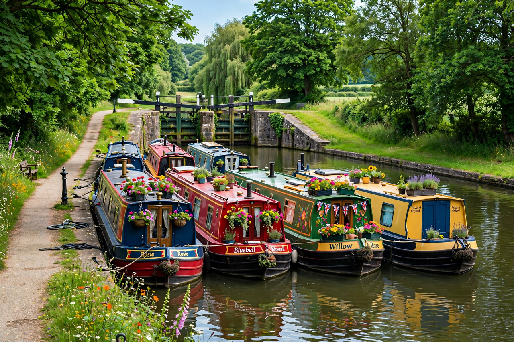

| Canal & River Trust | |
|---|---|
 Narrowboats on a Trust-maintained canal | |
| Founded | 2012 |
| Type | Charitable trust |
| Coverage | England and Wales |
| Network | About 2,000 miles (3,200 km) of canals and rivers |
| Predecessor | British Waterways |
The Canal & River Trust is a charitable trust that cares for the canal and river network of England and Wales. Launched in 2012, it took over the responsibilities of the state-owned British Waterways, becoming one of the largest charities established in the United Kingdom.
The Trust maintains around 2,000 miles (3,200 km) of navigable canals and rivers, together with thousands of structures: locks, aqueducts, bridges, reservoirs, docks and embankments, many of them listed or scheduled monuments of the Industrial Revolution. Historic engineering in its care includes major aqueducts and features such as the Britannia Bridge area of the Menai Strait (where the canal-era Telford works stand nearby) and the flight of locks at Caen Hill, Devizes. It issues boat licences, manages moorings and fisheries, and maintains towpaths used by millions of walkers and cyclists.
Funding combines a government grant, boat licence and mooring fees, commercial income such as property and utilities wayleaves, and charitable donations. The Trust relies heavily on volunteers for tasks from lock-keeping to vegetation management.